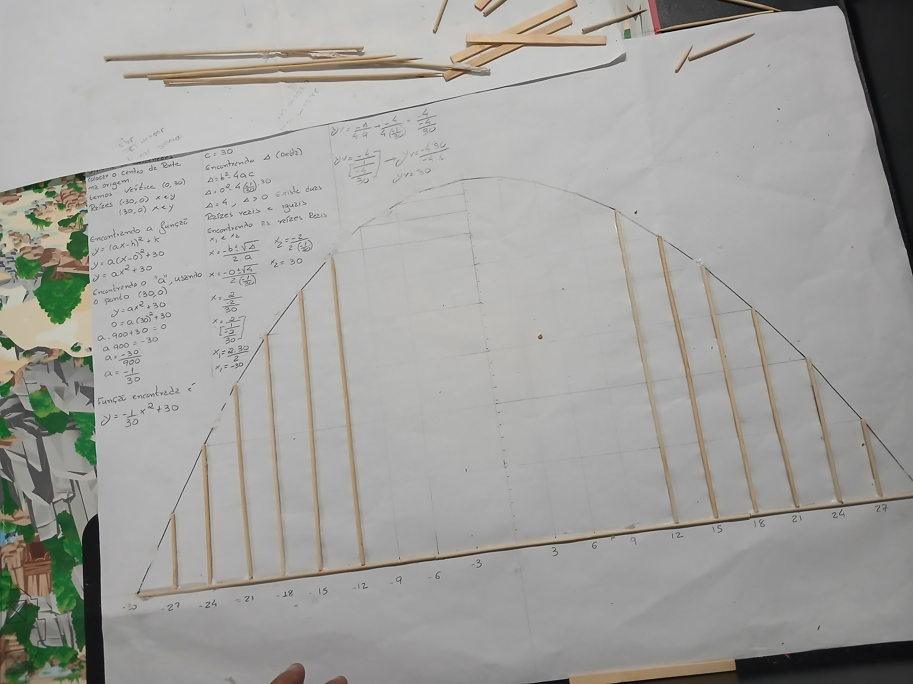
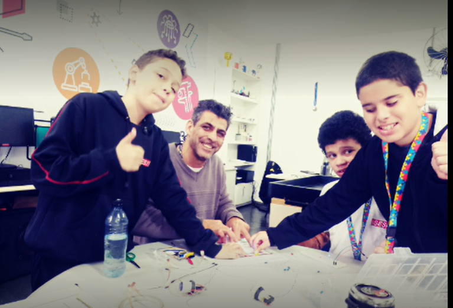
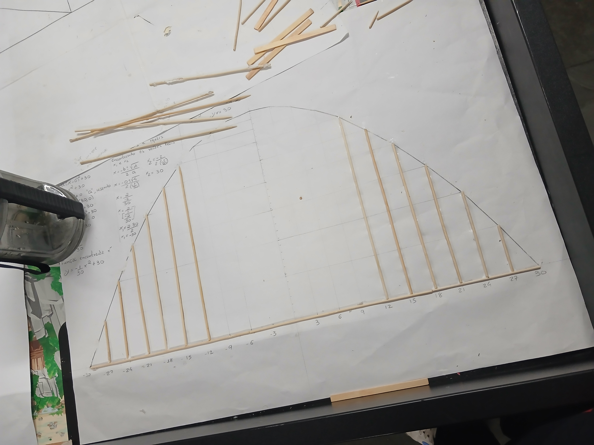
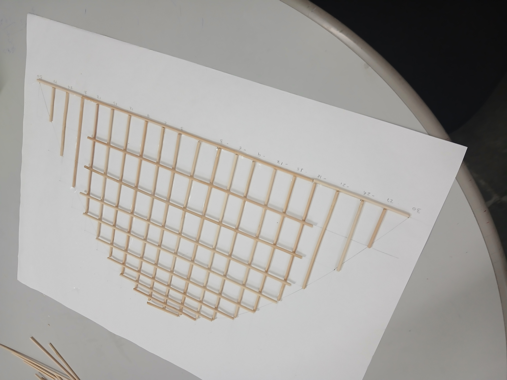
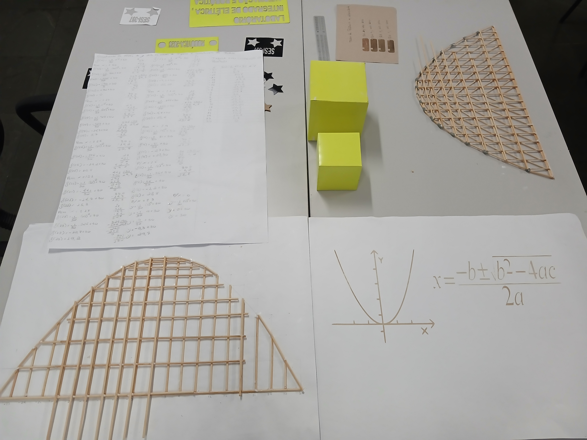

PROJETO
DA EQUAÇÃO À PONTE
Uma experiência que conecta Matemática, Geometria, Tecnologia, criatividade e aprendizagem mão na massa.

O objetivo é transformar conceitos matemáticos em uma experiência concreta de construção.
O projeto parte do estudo da equação do segundo grau para chegar à construção de uma ponte utilizando conceitos de parábola, escala, geometria e estruturas treliçadas.
A proposta não é apresentar uma receita pronta. O objetivo é criar uma situação de aprendizagem na qual professores e estudantes possam investigar, testar, construir, modificar e aprender durante o processo.
A construção utiliza materiais simples, como palitos de churrasco, permitindo relacionar o conteúdo matemático com uma produção física.
A Matemática deixa de ser apenas uma representação no papel e passa a ser utilizada para tomar decisões durante a construção.
Estudo da função quadrática.
Representação gráfica da função.
Transposição da curva para a construção.
Organização estrutural dos elementos.
Construção e análise do modelo.
A partir da função quadrática, os estudantes podem investigar raízes, vértice, concavidade, escala e representação gráfica.
O modelo ainda está em construção. O site acompanhará o desenvolvimento do projeto ao longo das próximas etapas.

Nesta etapa estão sendo analisadas as relações entre a representação matemática e a estrutura física construída com palitos.
O projeto também busca considerar diferentes formas de participação, representação e expressão.
Criar diferentes possibilidades para despertar o interesse e a participação dos estudantes.
Utilizar gráficos, cálculos, materiais físicos, imagens e diferentes linguagens.
Permitir que os estudantes demonstrem suas aprendizagens de diferentes maneiras.

A proposta é desenvolvida a partir das experiências realizadas na Sala Maker, buscando aproximar professores e estudantes da tecnologia, da Matemática e da aprendizagem por meio da construção.
O projeto busca principalmente orientar e inspirar professores a desenvolverem suas próprias experiências com os estudantes, respeitando os objetivos de aprendizagem e a realidade de cada turma.
Reunimos aqui os principais espaços digitais relacionados ao projeto.
Acesse o portal desenvolvido para reunir informações, projetos e recursos.
Acessar Portal SESIConheça outros projetos desenvolvidos e organizados em ambiente digital.
Acessar projetosÁrea destinada aos arquivos utilizados durante o desenvolvimento do projeto.
📄 Material PDF 01 📄 Material PDF 02Clique nos vídeos e acompanhe de perto o desenvolvimento desta experiência, que ainda está em construção.
Novas imagens poderão ser adicionadas conforme a construção avançar.

 Próxima etapa
Próxima etapa


Testes
Ponte finalFinalizar os cálculos matemáticos.
Ajustar a escala da estrutura.
Continuar a montagem da treliça.
Realizar testes de resistência.
Registrar fotos e vídeos.
Compartilhar a experiência com professores.